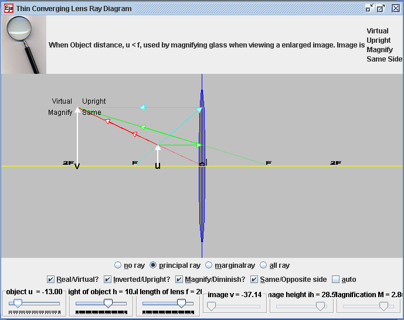

Thin Len Converging Ray Simulation
Thin Len Converging Ray Simulation
The Thin lens
equation assumed that if the distances from the object to the
lens and from the lens to the image are u and v respectively,
for a lens of negligible thickness, in air, the distances are related
by the thin lens formula:
1/u + 1/v = 1/f
What this means is that, if an object is placed at a distance u
along the axis in front of a positive lens of focal length f, a
screen placed at a distance v behind the lens will have a
sharp image of the object projected onto it.
When Object distance, u is near infinity ( very big compared to f),
the lens is used by telescopes. note that Convex (converging) lenses
produce an image of an object at infinity at their focus.if the sun
is imaged, much of the visible and infrared light incident on the lens
is concentrated into the small image. A large lens will create enough
intensity to burn a flammable object at the focal point
When Object distance, u > 2*f, the lens is used by camera when
forming images on film and the eyes.
When Object distance, u = 2*f, the lens is used by photocopier when
making equal size copies.
When Object distance, f < u < 2*f, the lens is used by overhead
projector to form magnified image.
When Object distance, u = f, the lens is used by spotlight when
projecting parallel beam of light.
When Object distance, u < f, the lens is used by magnifying glass
when viewing a enlarged image.
The magnification of the lens is given
by: M = - v/u
where M is the magnification factor; if |M|>1, the
image is larger than the object. Notice the sign convention here shows
that, if M is negative, as it is for real images, the image is
upside-down with respect to the object. For virtual images, M
is positive and the image is upright.
Please note that the shape of the lens adjust with the focal length is
for illusration purposes, it is not scientific.
This thin lens ray diagram java applet has:
Main view:
- Lens that is controllable by the focal length f, +f imply
converging lens -f imply diverging lens.
- Focal points drag-able, 2F, F, F & 2F
- u is position of Object from lens center c
- v is position of Image from lens center c.
- The object is drag-able to the right side of the lens
Top View:
- dynamically display a possible use of the lens under different
conditions with pictures shared under creative commons licenses and
other similar pro usage licenses under attribution.
Bottom View:
- 4 radio buttons: allows for different visualization purposes of
light path in the context of lens
- no ray
- principalray
- marginal ray
- all ray
- 4 check boxes:
- "Real/Virtual?"
- "Inverted/Upright?"
- "Magnify/Diminish?"
- "Same/Opposite side"
- Autoscale: to allow visualization view of images formed outside
designed screen view.
- 3 slider control:
- u, object distance from c
- h, height of object f,
- focal length of lens
- 3 values display:
- v,image distance from c
- ih, image height
- M, Magnification
Exercises:
- Explore the simulation. Notice that you can move the sliders to
vary the distance of the object to the centre of the thin len. What do
each of the sliders, radio buttons and checkboxes do?
- Take about 10 minutes to inquiry through the simulation model and
describe the action of a thin converging lens on a beam of light. (
this simulation currently does not have beam of light)
- Discuss with your lab partner what is the meaning of the focal
length f.
- hint: in terms of the way the light rays from the object is
bend and pass through where?
- check the principal rays radio button. Discuss and formulate
ideas how
the ray diagram allows the drawing of ray diagrams to illustrate the
formation of real and virtual images of an object by a
thin converging lens.
- What does the green ray light always do?
- What does the red ray light always do?
- What does the teal ray light always do?
- hint: in terms of the way ray light traveling parallel to and
passing through where etc?
- What does the term linear magnification mean in this simulation.
- Discuss how it is calculated from?
- How many ways are there to determine the magnification of the
think converging len.
- Check the no ray radio button. move the sliders a suitable
position of your choice. Now, sketch as accurately as possible on a
piece of paper, the principal ray diagram ( minimum 2 rays) to get the
image position and height. Practice a few times with different and
varied examples to allow you to draw scale diagrams to deduce the focal
length needed for particular values of magnification (converging lens
only)
- explore the simulation to make observations of the use of a
single converging lens as a
- magnifying glass
- a projector
- Draw rays of examples for each case to show clearly how each
forms an image
Sugested answers:
By definition, focal length is the distance between the point in the
lens where the light begins to diverge (the nodal point) when the
object is set at infinity.
Magnitifcation M = - v/u = ih/h
Credits:
The Thin Len model was created by created by Fu-Kwun Hwang,
customized by Loo Kang Wee and Wolfgang Christian using the
Easy Java Simulations (EJS) version 4.2 authoring and modeling
tool. An applet version of this model is available on the NTNU
website <
http://www.phy.ntnu.edu.tw/ntnujava/ >.
You can examine and modify this compiled EJS model if you run the
model (double click on the model's jar file), right-click within a
plot, and select "Open EJS Model" from the pop-up menu. You must,
of course, have EJS installed on your computer. Information about
EJS is available at: <http://www.um.es/fem/Ejs/>
and in the OSP comPADRE collection <http://www.compadre.org/OSP/>.